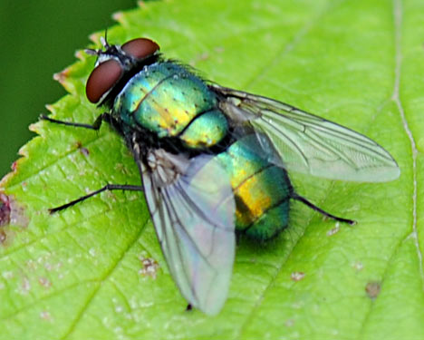

En un frondoso bosque, de un panal se derramó una rica y deliciosa miel, y las moscas acudieron rápidamente y ansiosas a devorarla. Y la miel era tan dulce y exquisita que las moscas no podían dejar de comerlas.
Lo que no se dieron cuenta las moscas es que sus patas se fueron prendiendo en la miel y que ya no podían alzar el vuelo de nuevo.
A punto de ahogarse en su exquisito tesoro, las moscas exclamaron:
- ¡Nos morimos, desgraciadas nosotras, por quererlo tomar todo en un instante de placer!
A un panal de rica miel
dos mil moscas acudieron,
que por golosas murieron,
presas de patas en él.
Otra dentro de un pastel
enterró su golosina.
Así, si bien se examina,
los humanos corazones
perecen en las prisiones
del vicio que los domina.
Si conoces alguna otra fábula para niños y quieres compartirla con nosotros y los demás padres, estaremos encantados de recibirla.
FIN